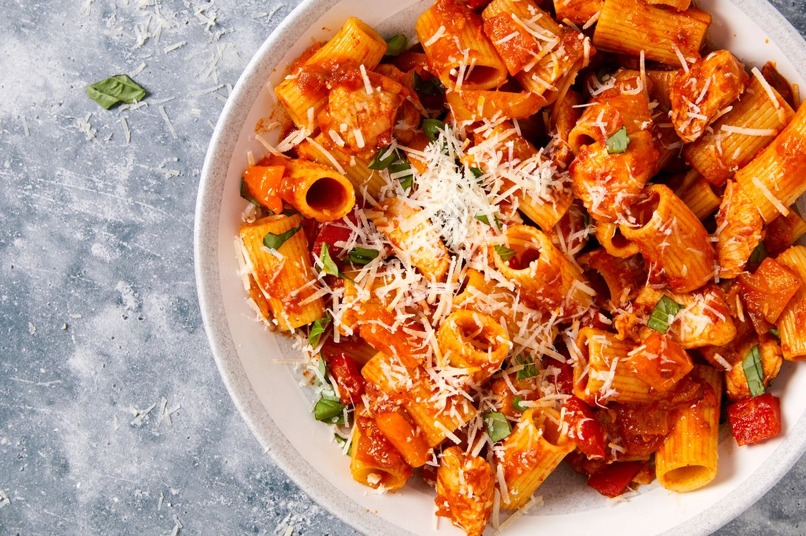

chicken Recipes

A collection of recipes from delish web!
Aside from a name that's a hoot to utter, Chicken Riggies (aka Utica, New York’s pasta
pride and joy) has a lot more going for it, namely that it's a spicy and a bit-sweet
pleasure to eat. It’s so good,
it might just become a new go-to weeknight dinner for all you non-Uticans out there.
Ingredients
- box (16 oz) rigatoni Fresh basil, chopped, for garnish
- tbsp. extra virgin olive oil
- 2 boneless, skinless chicken breasts, cut into bite size pieces
- 1/2 medium onion, chopped
- 2 large bell peppers, chopped
- 3/4 hot or sweet pickled peppers, chopped
- 3 cloves garlic, minced
- 1/2 tsp. red pepper flakes, optional
- 1/2 c. dry white wine
- 2 c. tomato puree or sauce
- Freshly ground black pepper
- 1 c. freshly grated parmesan, plus more for garnish
Recipe instructions (taken from the book)
- Bring a large pot of water to a boil and add 2 tablespoons of salt.
Add pasta and cook until just al dente, between 5-7 minutes. Drain,
but reserve about 1 cup of the pasta water.
Set aside pasta and reserved pasta water.
- In a large heavy-bottomed pot over medium heat,
add the oil and heat until shimmering. Working in batches,
add chicken in 1 layer and cook until browned on all sides,
about 4 to 5 minutes. Transfer chicken to a plate.
- Pour in the white wine, and deglaze the pan by scraping up any browned bits.
Allow to cook for 2 to 3 minutes. Add tomato puree, and stir
until everything is combined. Bring to a boil, lower heat, and simmer for about 7 minutes.
- Serve in bowls, and garnish with more cheese and basil.